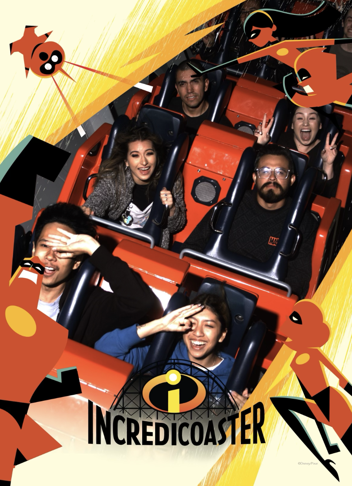
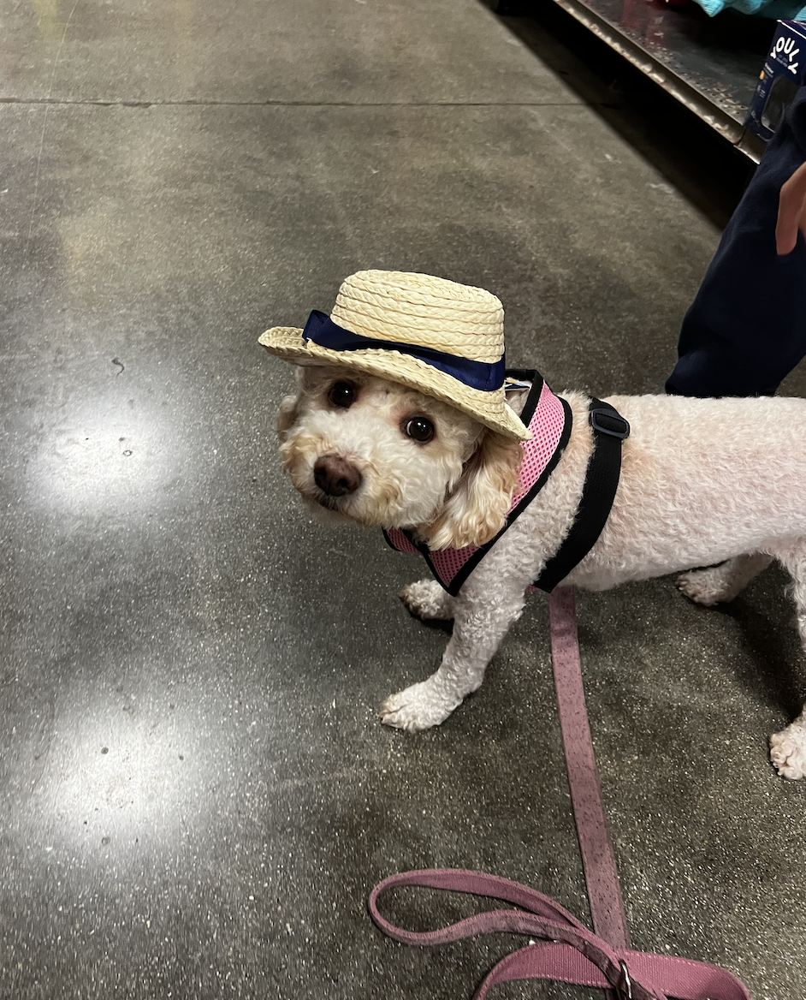
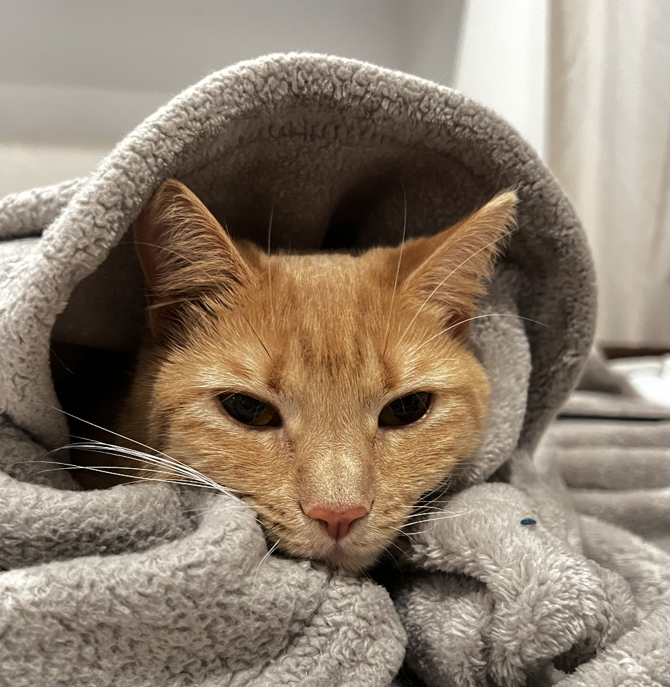

About Me

Hello there! My name is Naradahana Utoro Dewo, however I go by Nara as that is much shorter and simpler! I am a recent graduate of Loyola Marymount University with a Bachelor of Science in Computer Science. I have always been captivated by the world of technology and its limitless possibilities. Throughout my academic journey, I developed a strong passion for web development and mobile development, driven by a desire to create innovative and user-friendly digital experiences.
During my time at Loyola Marymount University, as well as the preceding years at Santa Monica College, I encountered various challenges, especially the unforeseen obstacles brought about by the COVID-19 pandemic. Despite the difficulties in securing an internship position during this time, I remained resilient and resourceful. I dedicated my efforts to expanding my knowledge and honing my skills by undertaking a range of personal projects.
Through these projects, I not only acquired practical experience but also nurtured my ability to work independently and solve problems creatively. I delved into diverse aspects of web and mobile development, exploring different frameworks, programming languages, and design principles. This hands-on experience allowed me to enhance my expertise in frontend and backend development, user interface design, and database management.
My academic journey has provided me with a solid foundation in computer science fundamentals, but it is the combination of my education and practical experience that truly sets me apart. I have a deep understanding of programming concepts, algorithms, and data structures, which enables me to write clean, efficient, and scalable code. Moreover, my passion for technology drives me to stay up to date with the latest industry trends and advancements, ensuring that I am equipped with the skills required to thrive in a rapidly evolving digital landscape.
As a recent graduate, I am eager to embark on the next phase of my professional journey. I am actively seeking new opportunities and job positions where I can leverage my knowledge and skills to contribute to a dynamic team and make a positive impact. I am open to positions in web development, mobile development, or any other related areas that align with my expertise.
If you have any potential opportunities or would like to discuss how my skills and background could benefit your organization, please do not hesitate to contact me. I am always excited to explore new prospects, collaborate with talented individuals, and contribute to meaningful projects.
Thank you for taking the time to learn more about me. I look forward to connecting with you soon!
Best regards,
Narada Utoro Dewo
Hobbies: Going to Disneyland, Walking my dog (Minnie), Sleeping with my cat (Bun Bun), Going to Coachella, Cooking, Travel/Road Trips
  